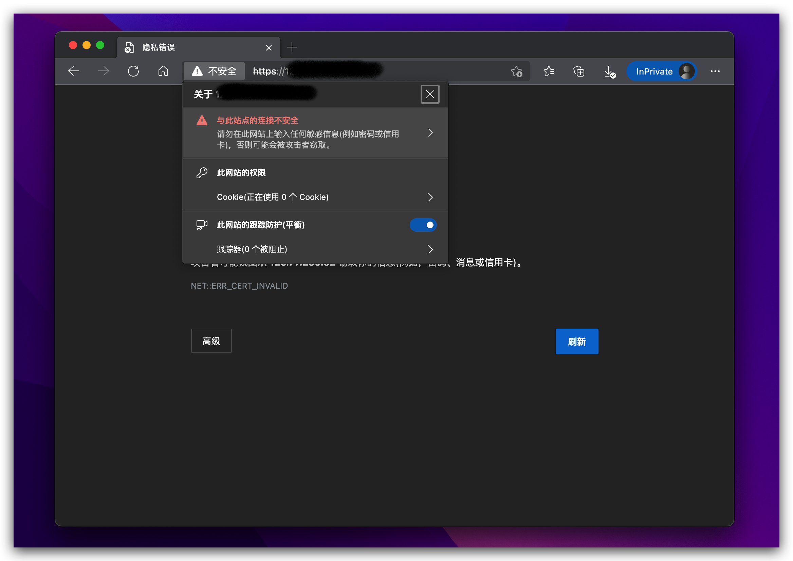
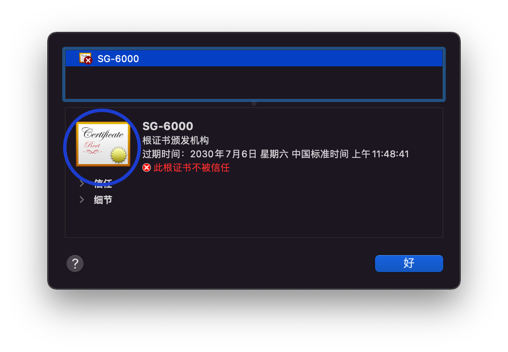

如何在 Microsoft Edge 中绕过证书校验错误
作为开发者有时会遇到需要在浏览器打开一个使用了自签名或私有 CA 证书的站点，这可能是一个用于测试的非正式站点或者某些设备 （如路由器）的管理界面。
通常在 Safari, Google Chrome 或 Firefox 浏览器中，在发生了证书校验错误之后，我们可以直接通过错误信息界面上的链接或按钮， 直接来手动强制信任有问题的证书，但是在 Microsoft Edge 的证书校验错误显示界面上没有类似的链接和按钮，那么有这么几种方法， 可以用于在 Microsoft Edge 中绕过证书校验错误。
TLDR
先说最简单的方法：在 Microsoft Edge 的证书校验错误显示界面上打开开发者工具面板，然后找到 控制台 ( Console ) 面板，
在其中执行如下 JavaScript 代码即可：
1 | sendCommand(SecurityInterstitialCommandId.CMD_PROCEED) |
方法二
使用 Safari, Google Chrome 或 Firefox 浏览器中打开有问题的站点，在证书校验错误显示界面上，点击相应的链接或按钮，来手动 信任该站点的证书，这实际上是在 macOS 系统的 KeyChain 中将该证书标记为受信任。因此在此之后回到 Microsoft Edge 重新打开 该站点便可以绕过证书校验了。
方法三
点击地址栏的“不安全”标记，然后点击 “与此站点的连接不安全”

然后点击证书图标

然后拖动下图中的证书图标到 Finder 的下载目录

- 打开 KeyChain Access.app，选择文件菜单下的“导入项目”，将 Finder 下载目录中的证书文件导入并设置证书为受信任即可。
注意：此步骤最好按照本步骤的描述操作，不要采用双击证书文件的形式导入，因为有些私有根证书可能无法通过双击证书文件的 形式正确导入。